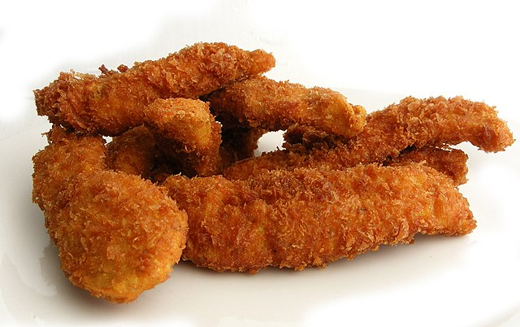

Quick and easy chicken fingers!
Need a quick and easy meal that everyone likes, and can be eaten both hot and cold, with or without dipping sauce? Look no further!
Ingredients
- Chicken breasts
- salt
- pepper
- Garlic powder
- Onion powder
- Flour
- Egg
- Bread crumbs
- oil
- Cut chicken into 2cm wide strips
- Add seasoning to bread crumbs
- Put pan on stove on medium-high heat and add a good amount of Oil
- Put chicken strups into flour, then egg and finally into the bread crumbs
- Fry until golden and crispy on one side, then turn them over
- Put the finished strips on a paper towel to wick away any excess oil
- Serve with dipping sauce of your choice!